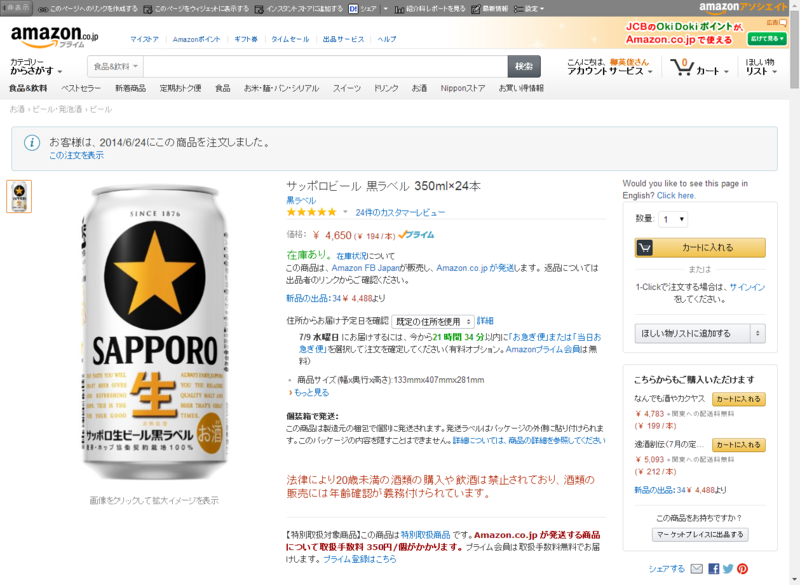
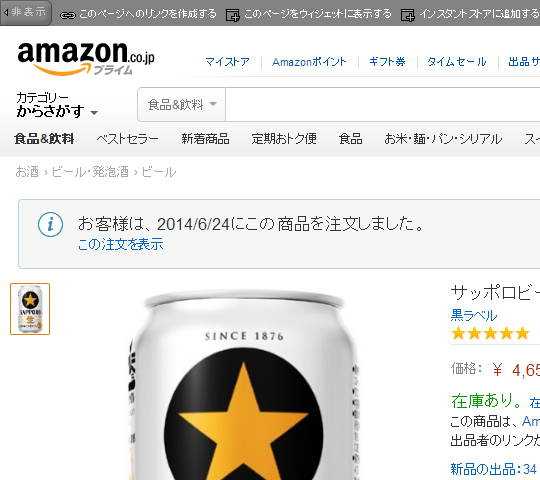

最近、ビールはアマゾンで買ってる。
執筆日時：

最近、ビールはアマゾンで買ってる。スーパーで買うのと大して値段は変わらないし、ウチの家は7階にあるのだけど、クロネコだか佐川の人がわざわざその7階まで持ってきてくれるから楽ちんだ。Amazon プライムに入ってるから送料もかからないしね（先々月あたりが更新だったのだけど、うっかり解除するのを忘れてた）。
まぁ、それだけでも十分うれしいのだけど、もう一つうれしいのはこれ。

同じものを頼むと、ご親切に前回の注文日を書いてくれてあるので、だいたいの消費ペースがわかる（震え声
自分の場合は、2週間に1ケースって感じだ。毎日二本弱飲んでいる計算になる。Oh……
とある民族は宴の後に「いつかは死すべき存在なのを思い出せ」と耳元で囁いて酔いを醒ますという罰ゲームをやるそうだけど、おれもそういうのが必要な気がしてきた。

- 出版社/メーカー: キリンビール
- メディア: 食品&飲料
- この商品を含むブログを見る
（ほんとはクラシックラガーのほうが好き）